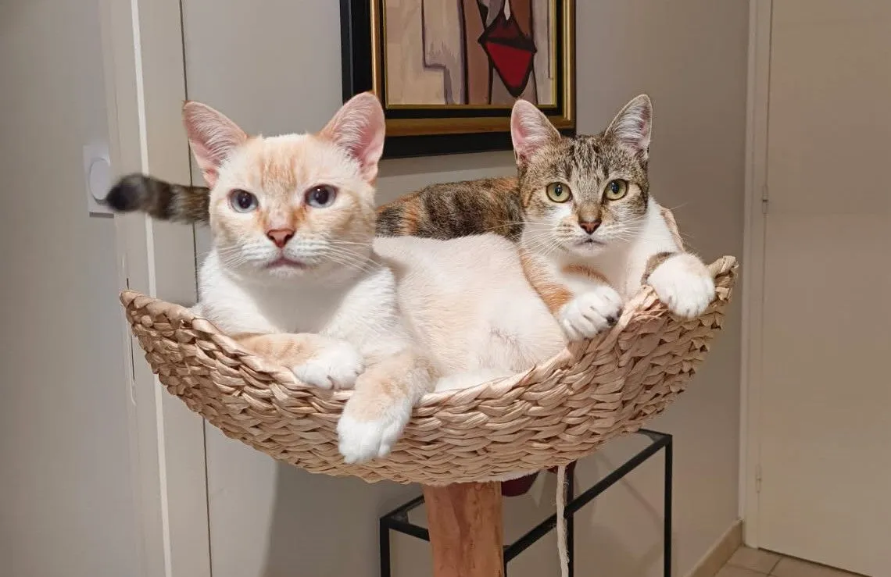
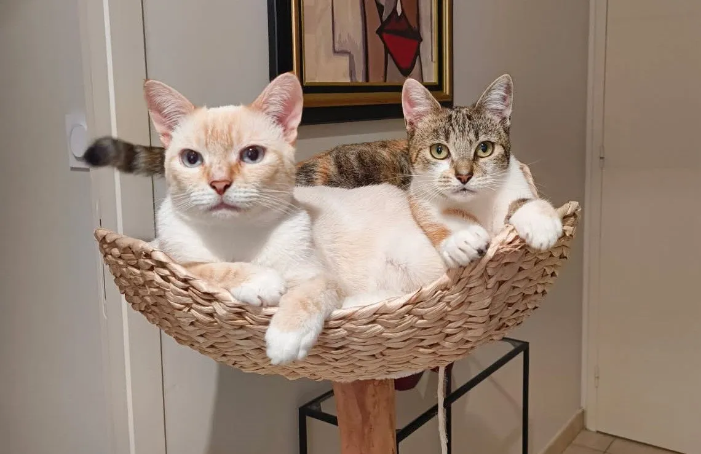

Le radeau de animaux
Un refuge pour Chiens et Chats
Créée en 2013, au coeur de la campagne bretonne, l'association Le Radea des Animaux accueille les chiens et chats, abandonnés ou maltraités, principalement sur le secteur du Morbihan (56) et de la Loire-Atlantique (44).
L'équipe du Radeau met ensuite tout en oeuvre pour leur offrir l'accès à une vie douce et seraine auprès d'une famille aimante.
C'est donc grâce à vos dons et investissement constant de nos bénévoles que notre action est possible.
.png)
Le calendrier est en vente à l’accueil du refuge. Prix : 12 €
Nous remercions chaleureusement nos sponsors, qui ont permis la réalisation de ce nouveau calendrier Tous les bénéfices sont intégralement utilisés pour financer les soins des animaux du refuge Merci de nous aider en achetant ce très beau calendrier
FAIRE UN DON
Aux côtés d'autres d'associations, le Radeau des animaux s'investit dans le combat contre la maltraitance animale !
A trois reprises au cours de ces derniers mois, le Radeau des animaux est venu soustraire des animaux de la main de leurs bourreaux, au sein d'élevages infâmes...
Et c'est plus d'une trentaine de chiens qui ont retrouvé la santé, le chemin de la liberté et l'affection d'un foyer chaleureux !
Tant d'autres animaux attendent notre aide !
Mais nous ne pouvons rien pour eux sans vous, sans votre soutien.
Ensemble, nous pouvons arracher d'autres animaux de la souffrance
Aidez-nous à leur venir en aide !
FAIRE UN DON
.webp)
.webp)
.jpeg)
Appel au bénévolat
Notre équipe a besoin de RENFORT pour assurer toutes les permanences nécessaires.
En effet, les animaux du Radeau ont besoin de notre présence constante pour leur apporter nourriture, bien sûr, mais aussi soin et réconfort
Si vous disposez de quelques heures par semaine et que vous avez envie de travailler en équipe autour du bien-être animal, alors ce poste est pour vous !
→ Adressez nous un mail :
radeaudesanimaux@orange.fr→ Vous pouvez également nous contacter par téléphone :
au 06.21.10.14.39 (de 9h à 14h)→ Ou nous rendre visite au refuge, les jours d'ouverture de l'accueil :
Lieu dit : Kerolay (sur D34) 56130 FERELPar avance, nous vous remercions de votre aide
DEVENIR BÉNÉVOLE
PAROLES D'ADOPTANTS
Nous avons reçu, il y a quelques jours, des photos et une vidéo de deux jeunes chats, adoptés en avril dernier par la même famille.
Snow, le mâle de couleur crème
Xéna, la femelle à robe tigrée
Photos et vidéo ne nécessitent aucun commentaire, car elles parlent d'elles-mêmes...
Douceur, quiétude, espiègleries ...
En vous d'en profiter !
.webp) 

LA BOUTIQUE DU REFUGE
En toutes saisons, la boutique du Radeau vous propose tout l'équipement nécessaire pour votre petit compagnon...
Colliers, harnais, équipement et autres friandises à petits prix vous attendent !
Et l'intégralité des sommes versées est destinée aux animaux du Radeau !